Reports at three nested levels.
MEEGqc generates self-contained HTML reports at three scopes: subject-level (one recording), dataset-level (all subjects in one dataset, QA + QC variants), and multi-dataset-level (cross-dataset). They share the same tab grammar, lobe colour conventions, and set of interactive controls.
Subject-level QA
The subject-level QA report shows the full quality profile of one subject across all of its runs and tasks. Use it for isolated triage and for explaining why a recording ranked low in the dataset-level QC report.
Tab hierarchy
| Level | Content |
|---|---|
| 1 | Top tabs: Overview, STD, PtP (manual), PtP (auto), PSD, ECG, EOG, Muscle, Head, Stimulus, QC summary. |
| 2 | Run / task subtabs within each metric tab. |
| 3 | Channel-type subtabs: MAG, GRAD, EEG, plus General for ECG / EOG signal views. |
| 4 | Plot subtabs (3D topomap, distribution, channel x epoch heatmap, profile, etc.). |
Explore the tabs
Click each chip to see what the report shows in that tab and which views are available.
Subject metadata, recording header details (acquisition date, sampling rate, hardware filters, channel counts), a run x metric availability table, and a 3D sensor geometry view colour-coded by lobe.
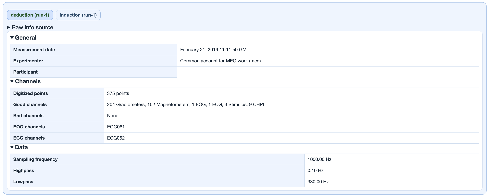
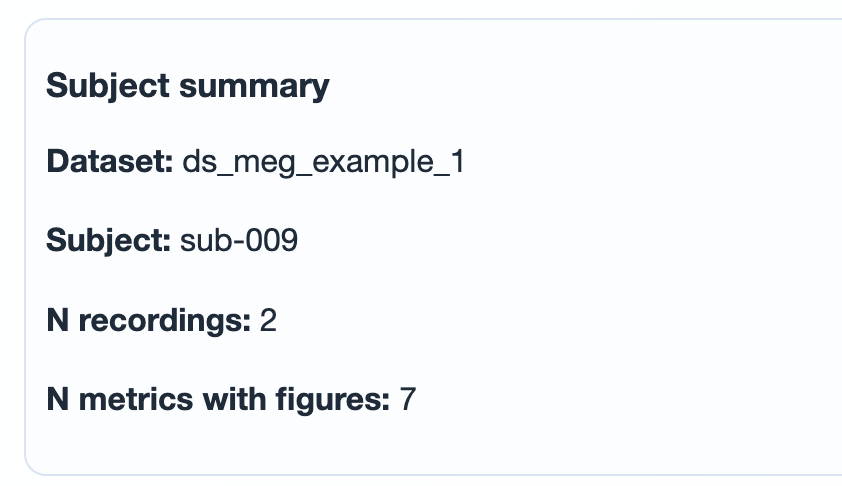
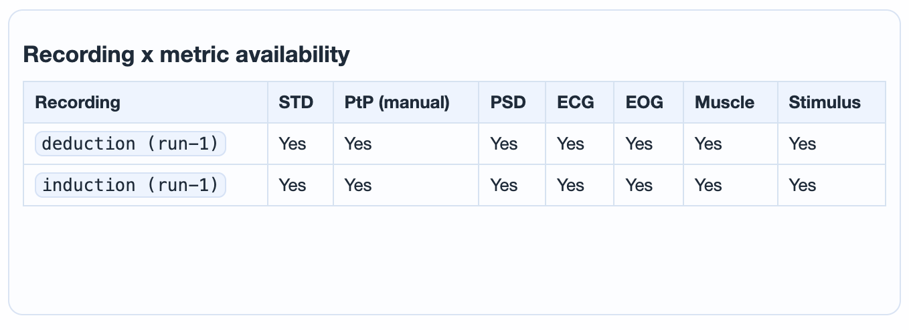
Channel-wise standard deviation. Three subtabs: 3D topomap, distribution boxplot (one dot per channel), and channel x epoch heatmap with marginal profiles. Persistently high rows are bad-channel candidates; sparse vertical spikes are candidates for selective epoch rejection.
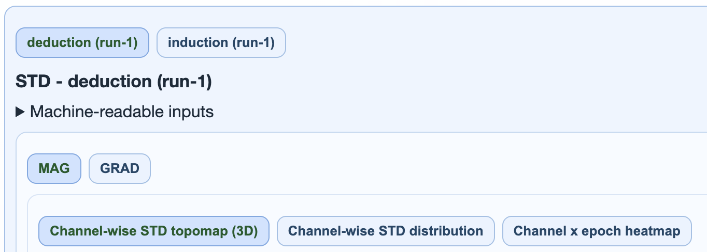
→ Deep dive: how the STD metric works (calculation, thresholds, GQI contribution).
Peak-to-peak amplitude per epoch
(max(s) - min(s)). Catches transient bursts
and outlier excursions that STD averages out. Two
flavours: PtP (manual) uses the MEEGqc
Numba-accelerated path, PtP (auto) uses
MNE's automatic epoch annotation.
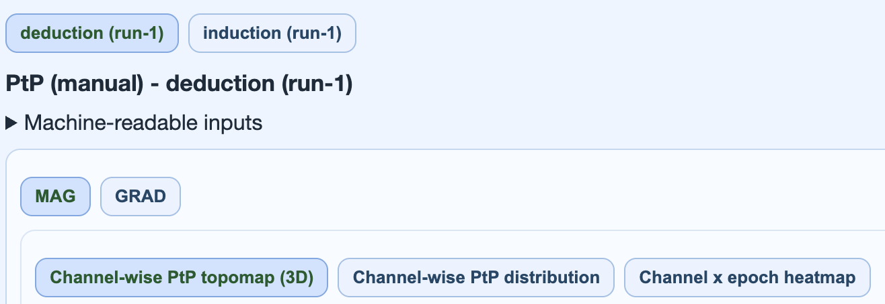
→ Deep dive: how the PtP metric works (manual vs auto, Numba acceleration, GQI contribution).
Power spectral density. Spot narrowband interference (mains harmonics at 50 / 60 / 100 / 120 Hz) and broadband contamination. Five views: SNR triage, Welch curves, relative-band amplitude, and a frequency-selectable topomap.
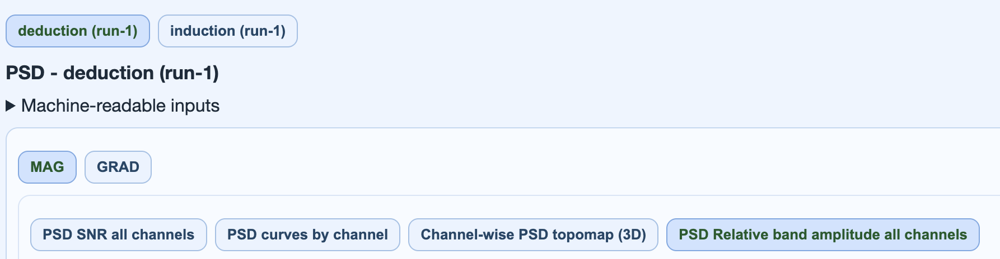


→ Deep dive: how the PSD metric works (Welch window, noise band, GQI contribution).
Cardiac contamination. The General subtab visualises the ECG channel itself (peaks, BPM, average R-mean waveform). The MAG / GRAD / EEG subtabs show how strongly the ECG signal correlates with each sensor, with three buckets (most / moderately / least affected).
abs(corr_coef)
between each sensor's average artifact and the mean
R-wave. Brighter sensors carry more cardiac
contamination.abs(corr_coef)). Channel waves track the
mean R-wave closely.→ Deep dive: how the ECG metric works (sanity check, correlation procedure, GQI contribution).
Ocular contamination (blinks, saccades). Same structure as ECG: General subtab for the raw EOG channel, MAG / GRAD / EEG subtabs for sensor correlation buckets. Strongest impact typically frontal.
abs(corr_coef):
ocular contamination typically concentrates on frontal
sensors.abs(corr_coef)). Tight tracking of the
mean blink, usually frontal.→ Deep dive: how the EOG metric works (sanity check, correlation procedure, GQI contribution).
High-frequency muscle burden. 110-140 Hz for MEG, 20-100 Hz for EEG. Burst-driven by jaw clenches, neck tension, and similar artifacts. The plot shows z-scored high-frequency power across time.
mus family of the GQI.→ Deep dive: how the Muscle metric works (band selection per modality, GQI contribution).
MEG-only. Movement across the recording derived from cHPI data: six motion parameters (three translations, three rotations) plus a derived summary. EEG recordings show a banner explaining that the metric is skipped because cHPI is MEG-specific.
→ Deep dive: how the Head movement metric works (MEG-only behaviour, EEG fallback).
Reads events from BIDS _events.tsv first,
falls back to the raw stim channels. Confirms event
count, timing, and trial-type distribution.

_events.tsv or fallback stim channel
reconstruction).
_events.tsv. Colour-coded by trial type;
useful as a sanity check that triggers landed where the
protocol expected.
_events.tsv is missing or
incomplete.→ Deep dive: the Stimulus sanity-check view.
Compact metric-by-metric distillation of the QA results for this subject plus its GQI score across attempts. Short text summary, then auditable detail tables, then exact paths to the underlying derivatives.

ch, corr, mus,
psd). Read the dominant family to know what
to fix.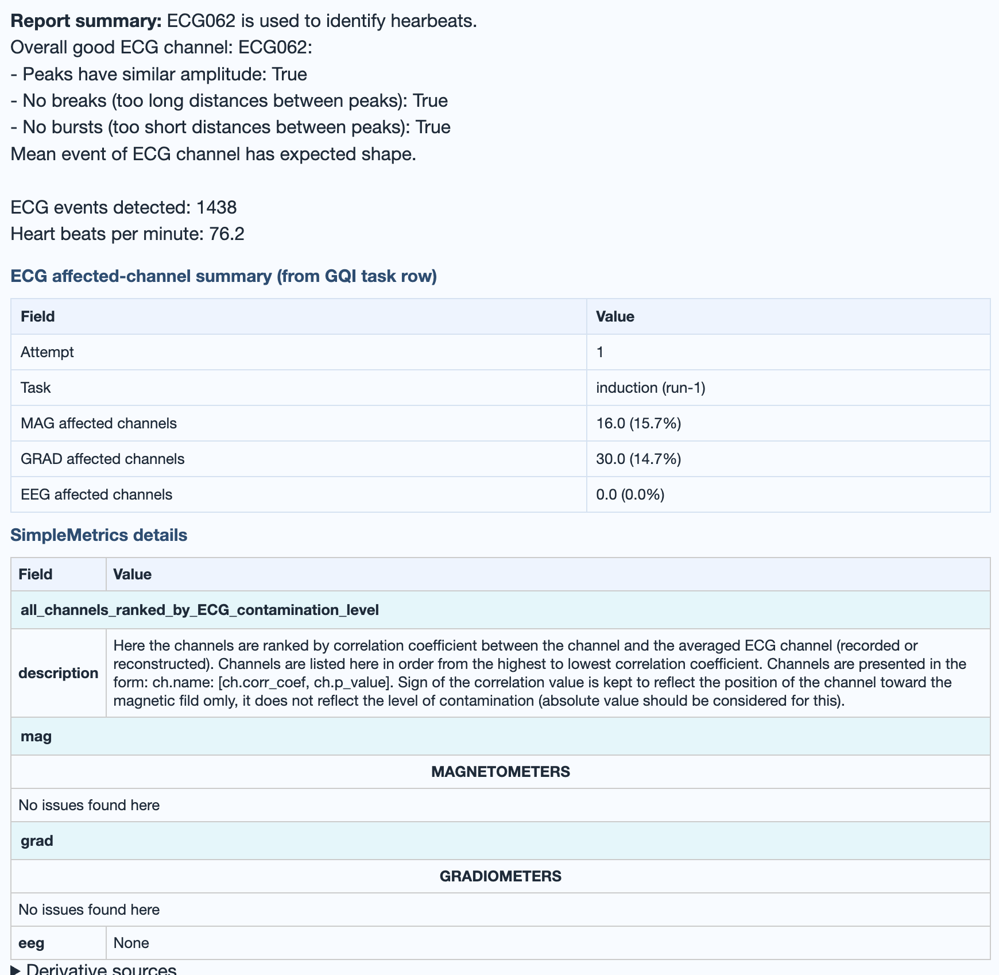
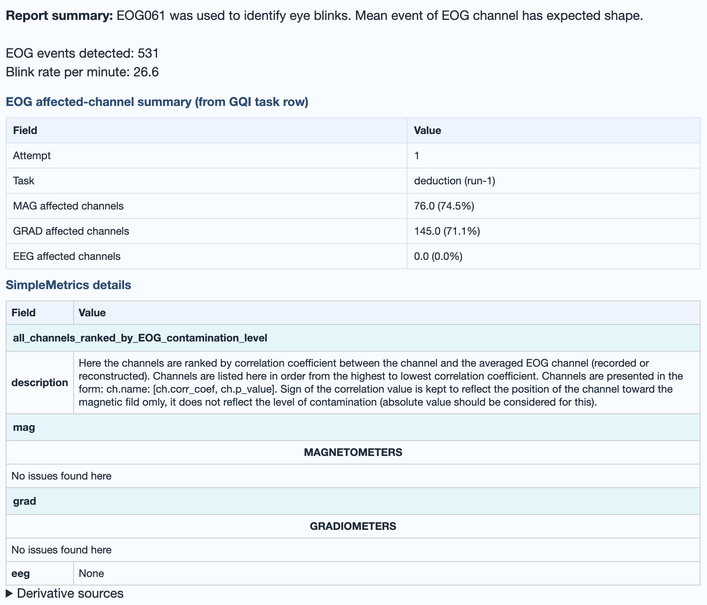
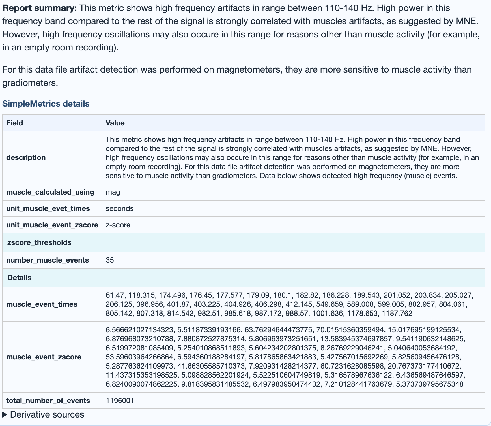
→ Deep dive: how the GQI is computed (penalty families, thresholds, weights, attempt versioning).
Dataset-level QA
The dataset-level QA report aggregates quality assessment across all subjects in one dataset. Use it to identify cohort patterns, outliers, and task-dependent shifts.
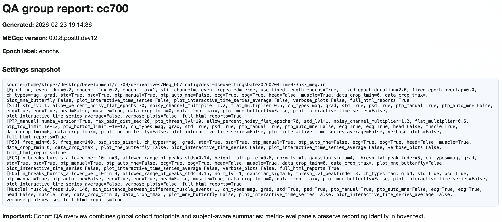
Tab hierarchy
| Level | Content |
|---|---|
| 1 | Channel-type tabs: Combined (mag+grad), MAG, GRAD, EEG (when present). |
| 2 | Section tabs (5 of them, listed below). |
| 3 | Metric subtabs within Section 4 details. |
| 4+ | Measures (Median, Mean, Upper Tail) and figure types (Boxplot, Violin, Histogram, Density). |
Explore the five sections
Violin + box plots of every metric across every recording in the dataset, with each recording plotted as a hoverable dot. Pooled 3D topomaps summarise where issues concentrate.
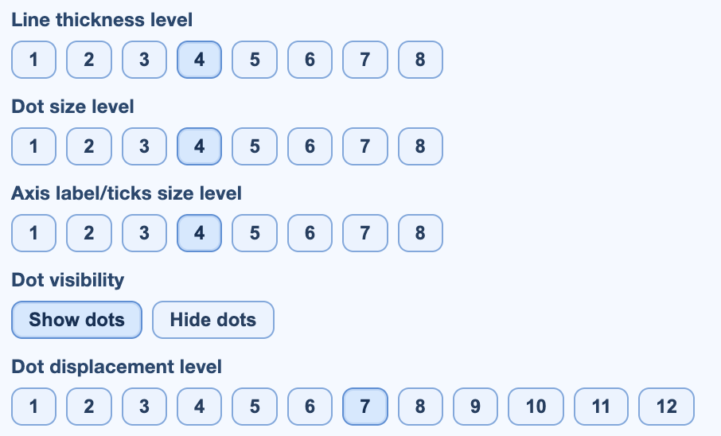
→ Reference: the metrics page covers what each distribution is measuring.
General dataset information, subject ranking table (worst first), and recording x metric / subject x metric matrices.
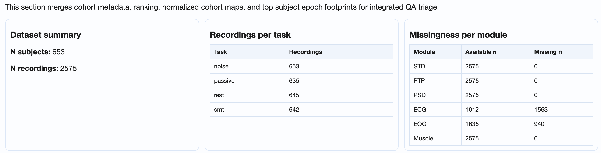
→ Reference: the metrics page for what each matrix column measures.
Line plots: one line per subject, dark line for the cohort median. Reveals task-dependent shifts.
→ Reference: the metrics page for the per-metric definitions plotted on the Y axis.
Per-metric deep dive with three panel perspectives
(recording / epoch-per-channel / channel-per-epoch) and
four figure types (boxplot, violin, histogram, density).
Switch between Raw and Normalized
modes to compare across conditions without changing rank.
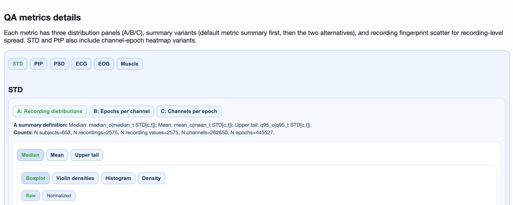
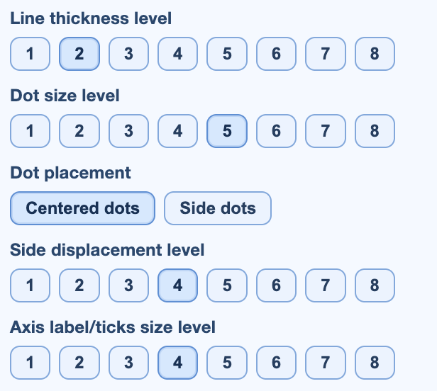
→ Reference: the metrics page for the per-metric pipeline behind each subtab.
Empirical cumulative distribution functions. Read "what percentage of recordings sit below value X" directly off the curve to support threshold-selection decisions. One ECDF per QA metric:
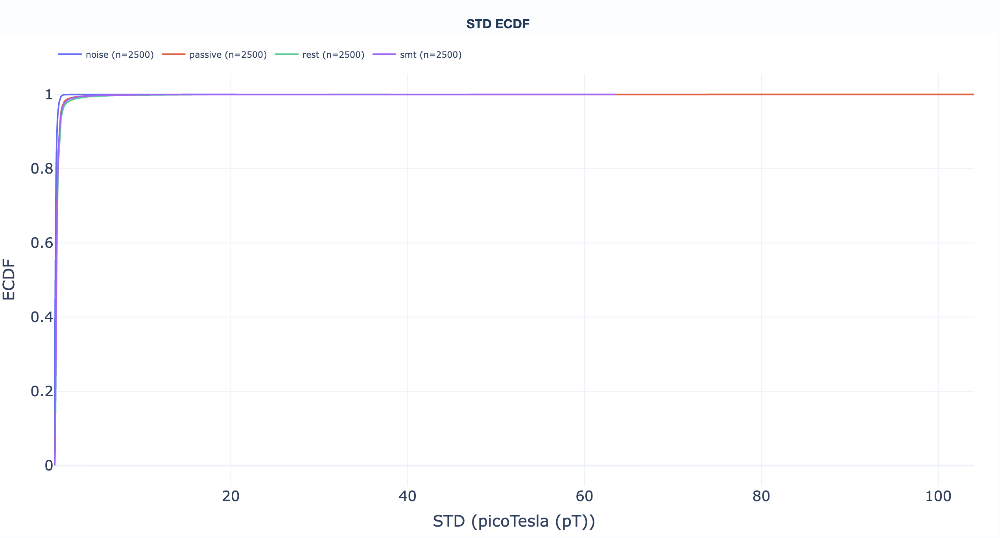
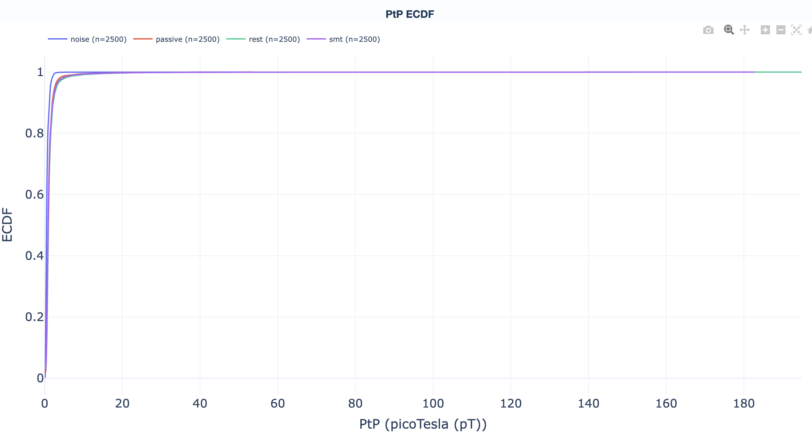
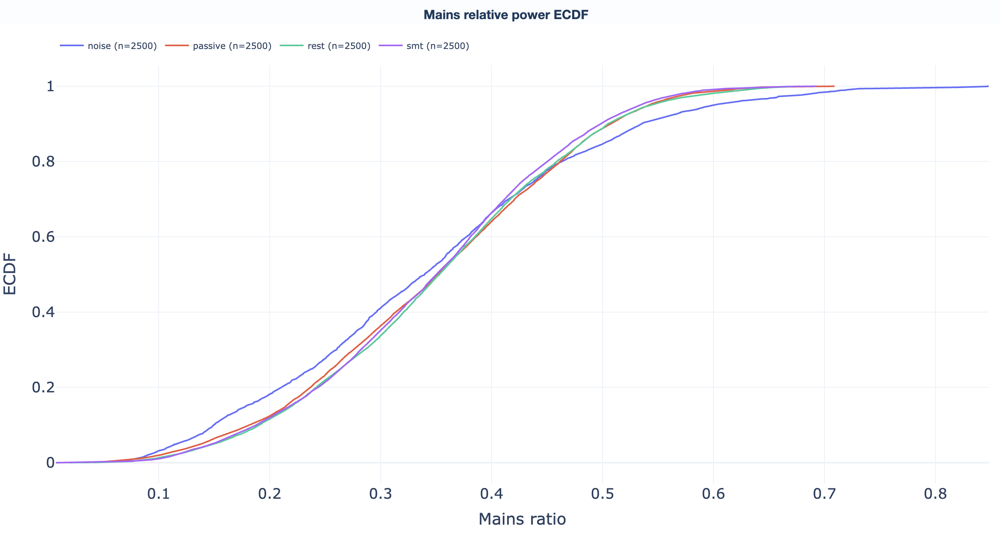
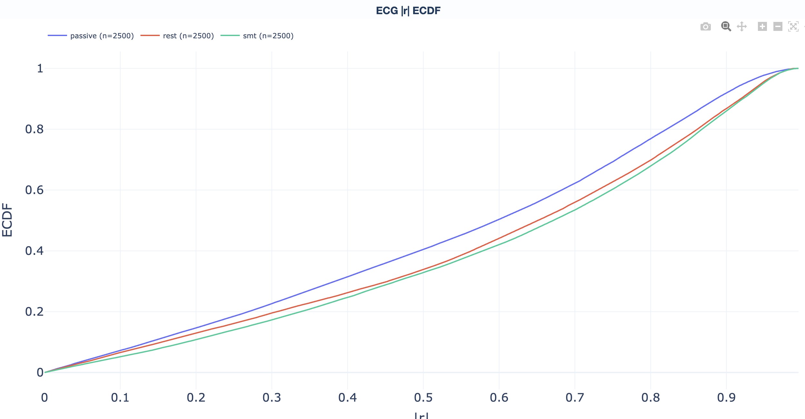
abs(corr_coef) above the operational
threshold; the curve answers "how much of the cohort
has more than X % cardiac-affected channels?".
ECG metric reference.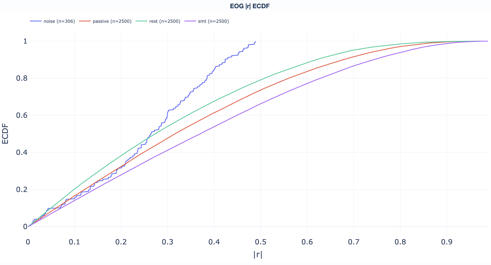
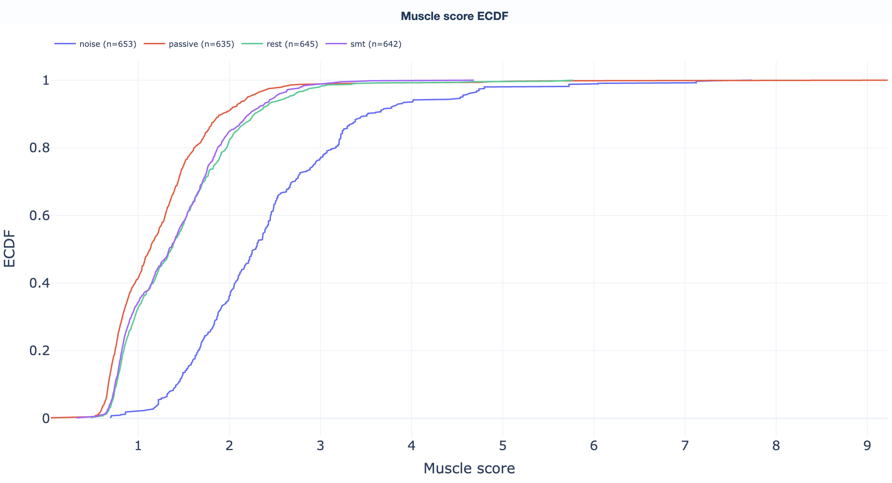
Read directly off the curve: "what fraction of recordings sit below threshold X?" Useful for picking GQI thresholds (see the GQI section).
Dataset-level QC
Dataset-level QC reports centre on the Global Quality Index (GQI). Unlike QA reports, QC reports summarise quality decisions based on configurable thresholds. Each recording gets a single 0-100 score; component breakdowns explain what dragged the score down.
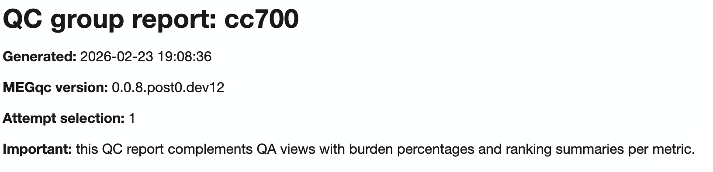
Dataset overview
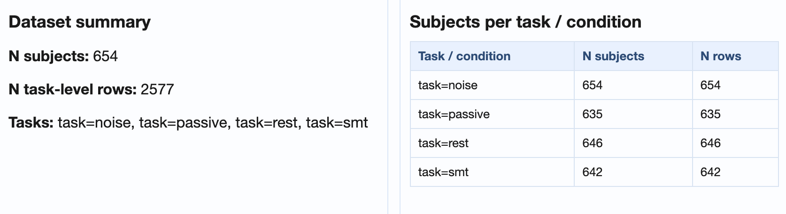
global_quality_index_<n>.ini) tied
to the current attempt, so the decision criteria are
visible alongside the data.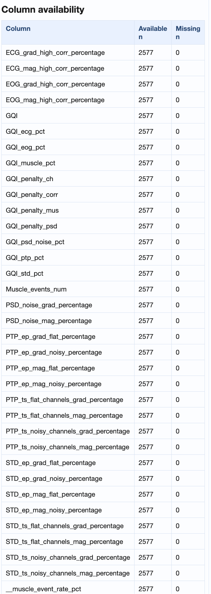
Inputs and attempts
QC Group reads GQI results from attempt-indexed, per-modality TSVs:
Attempt resolution order:
- Explicit
--input_tsvpath. - Explicit
--attempt <n>. - Latest available attempt (default).
Tab hierarchy
| Level | Content |
|---|---|
| 1 | Channel-type tabs: Combined (mag+grad), MAG, GRAD, EEG. |
| 2 | Metric tabs (below). |
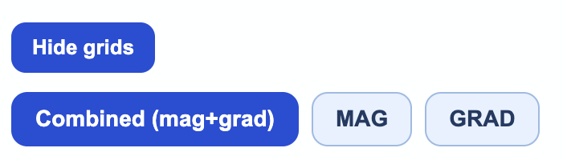
Summary distributions
The summary distribution tab shows box / violin plots for every QC metric across the cohort, so a single glance shows where the dataset sits relative to the configured thresholds.
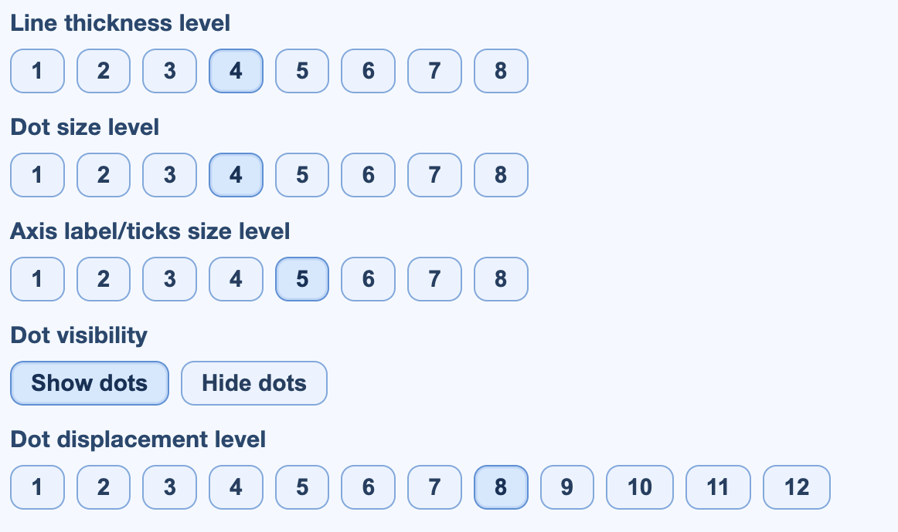
Metric details: across tasks + subject ranking
The metric-details tab adds two layers on top of the summary distributions: a per-task trajectory view and a worst-first subject ranking, both shared across every metric subtab.
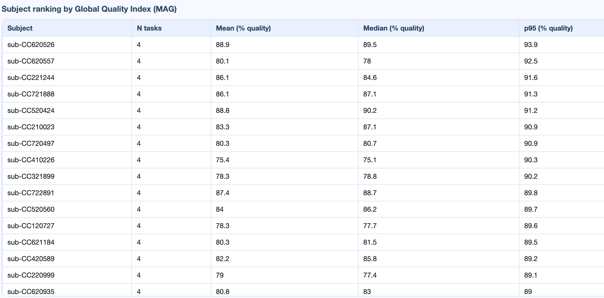
Explore the metric tabs
Score distribution, penalty decomposition across four
families (ch, corr,
mus, psd), and recording-level
ranking. Penalty math and threshold defaults are on the
metrics + GQI page.
| Range | Interpretation |
|---|---|
| 90-100 % | Excellent. Minimal artifacts. |
| 70-89 % | Good. Some artifacts present. |
| 50-69 % | Moderate. Notable artifact burden. |
| Below 50 % | Poor. Significant issues. |
→ Deep dive: how the GQI is computed (penalty families, defaults, weights, attempts).
Noisy / flat channel %, noisy / flat epoch %. Distributions across recordings + ranking per task.
→ Deep dive: how the STD metric works.
Same content as STD but for peak-to-peak amplitude.
→ Deep dive: how the PtP metric works.
PSD noise burden % per recording, distribution + ranking per task.
→ Deep dive: how the PSD metric works.
High-correlation channel % per recording, per task.
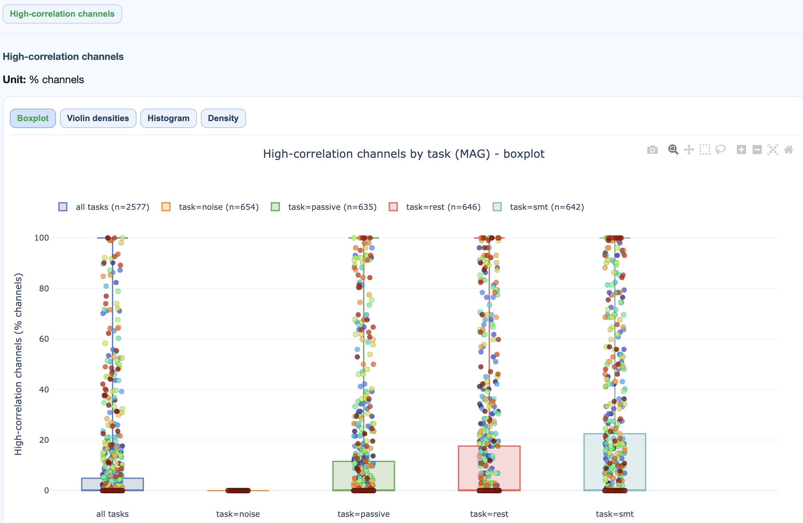
→ Deep dive: how the ECG metric works (sanity check, correlation procedure, GQI contribution).
High-correlation channel % per recording, per task.
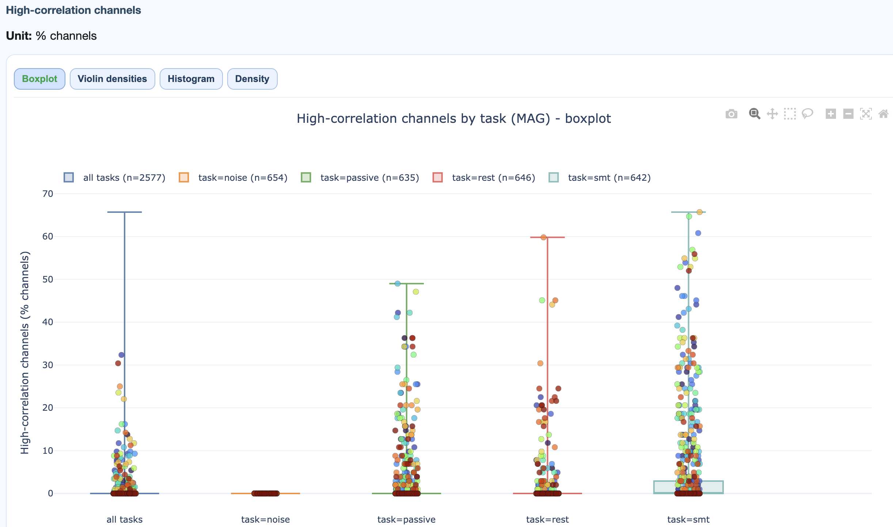
→ Deep dive: how the EOG metric works.
Muscle event count, event rate, and GQI muscle component per task.
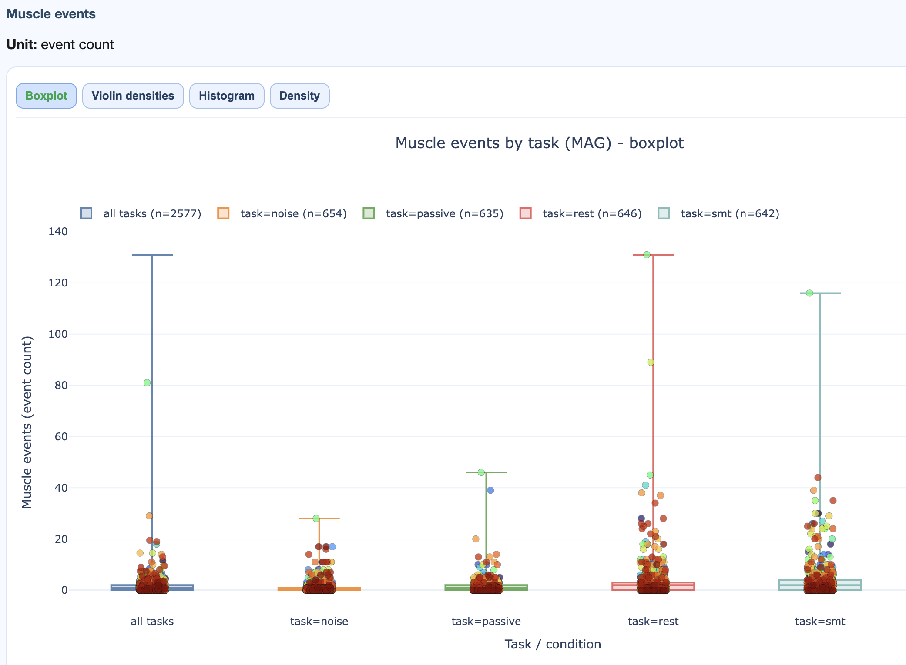
→ Deep dive: how the Muscle metric works.
Drill-down workflow
- Start with the GQI tab. Identify low-scoring recordings and the dominant penalty family.
- If
chis high, open the STD / PtP tabs. - If
corris high, open ECG / EOG. - If
musis high, open Muscle. - Switch MAG vs GRAD to see if the issue is sensor-type specific.
- Open the subject-level QA report for the flagged recording for the full channel x epoch picture.
Multi-dataset-level reports
Multi-dataset-level reports compare two or more datasets side by side. They come in two flavours that mirror QA / QC: QA Multi-dataset compares raw signal profiles; QC Multi-dataset compares GQI scores.
Multi-site studies
Compare data quality across acquisition sites; spot systematic shifts.
Longitudinal waves
Track quality changes across collection waves; detect equipment degradation and protocol drift.
Harmonization
Decide whether datasets can be pooled, or whether each needs its own QC threshold.
Benchmarking
Compare a new dataset against a reference to validate collection procedures.
Structure
Both multi-dataset reports follow the same shape as their single-dataset cousins, plus per-dataset subtabs:
QA Multi-dataset
Top tabs: Combined | MAG | GRAD | EEG
Section tabs:
1. Summary distributions (pooled across datasets)
2. Cohort overview (one subtab per dataset)
3. Metrics across tasks (one subtab per dataset)
4. Metric details (shared distributions + per-dataset heatmaps)
5. ECDFs (pooled across datasets)
QC Multi-dataset
Top tabs: Combined | MAG | GRAD | EEG
Metric tabs: GQI | STD | PtP | PSD | ECG | EOG | Muscle
Cross-dataset distribution comparisonsPreconditions
- At least 2 datasets.
- Compatible analysis profiles (same metrics enabled).
- Similar GQI parameterisation for fair score comparison.
- Comparable tasks / conditions for task-dependent views.
Practical reading order
The fastest path through a fresh dataset:
- Open the dataset-level QC report. Look at the GQI distribution and the penalty family ranking.
- Pick the worst few recordings; open them in the subject-level QA report.
- Open the dataset-level QA report's task-wise view to check if problems concentrate in one condition.
- For multi-site studies, finish with the multi-dataset-level report to inform harmonisation decisions.
Metric-by-metric interpretation and the GQI math are on the
metrics + GQI page. Threshold
tuning is in
[GlobalQualityIndex]
in the settings reference.